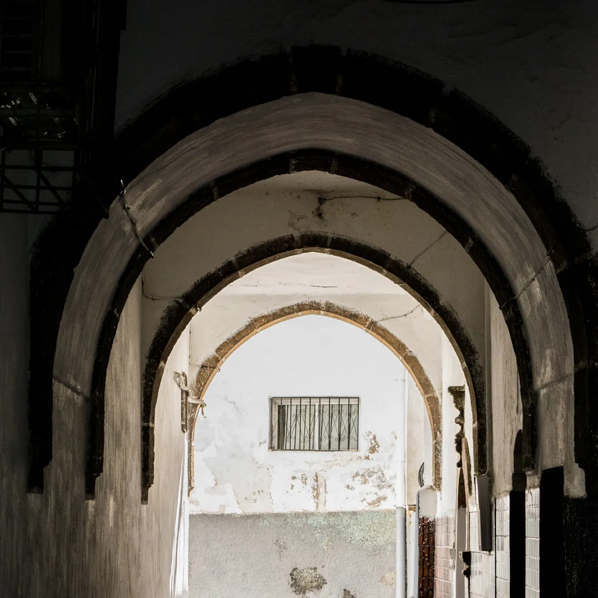

LONDONSep 28, 2026
Signals From the Heart of the Rave
Rupture turns twenty with a book written by the people on its floor, and a love letter to the South London arches it called home for eighteen years.
There is a particular kind of quiet that follows a room like Corsica Studios. You know it if you have ever walked out of a railway arch at the tail end of a long night, eyeliner gone soft at the corners, platforms in one hand, ears still humming with a bassline that has not quite let go of your ribs. The street feels too wide and too bright. Somebody in your crew is already talking about the afters, somebody else is checking their compact, and you are trying to hold on to the last hour a little longer.
Rupture has been manufacturing that feeling in London for twenty years. This autumn, the jungle and drum & bass night and label founded by Double O and Mantra in 2006 is marking the anniversary the way a community should, by handing the microphone to the people who built it. We Are Rupture: Signals from the Heart of the Rave arrives on 13 November via Velocity Press, and it doubles as a eulogy for the venue that held Rupture for most of its life.
A night built out of necessity
The origin story is refreshingly unglamorous. According to Velocity Press, Rupture began as a response to a lack of DJ opportunities in London. Two selectors could not find the room they needed, so they made one, and spent two decades holding the door open for everyone else. Velocity describes a night that has forged "an intergenerational camaraderie" between younger producers and crews and the foundational artists who came before them, with a sound that leans into the jungle and breaks side of drum & bass.
That intergenerational thread is the thing people keep coming back to. In a quote Velocity has published alongside the book, DJ Mag's Ben Hindle writes that "foundational artists and new kids on the block are held in equally high regard," and that people "otherwise separated or even marginalised by age, race, gender or sexuality are welcomed in the booth and on the dancefloor." The producer Mani Festo, quoted on the same page, calls it simply "love; it's a community."
The book as a mixtape of voices
We Are Rupture is not a coffee table victory lap. Velocity describes it as a gathering of "stories, poems and reflections from dancers, artists and event producers," rooted in what DJ Mag, reporting the announcement on 8 September, called the "community, Blackness and sound system heritage" of the event and imprint. Contributors include Fabio, DJ Storm, Tim Reaper and DJ Flight, alongside the attendees, workers and event producers who kept the night running from the floor up.
What moves me most is the question the publisher says the book is really asking: "why do we rave, and why does it matter now more than ever?" The answers apparently range from the romance of "international ravers making the pilgrimage to Corsica Studios" to something far more tender, which Velocity frames as "rave as grief processing and somatic healing." Anyone who has cried on a dancefloor will recognise the territory.
Mantra, in the press statement quoted by DJ Mag, refuses to let the anniversary become a monument to the founders. "This isn't about us; this isn't about Rupture; This is about the music being driven forward and the whole culture, leaving a legacy and wanting it to build," she said. "People from all walks of life, together, connected through music, is really, really powerful. It's spiritual." DJ Flight's blurb for the book ends on a line that could be stitched onto a bomber jacket: "We Are One. We Are Rupture."
Eighteen years under the arches
You cannot tell the Rupture story without Corsica Studios, and the book does not try. According to DJ Mag's April tribute to the venue, Rupture moved into the Elephant and Castle arches in 2008, at a time when the club did not host any drum & bass at all. Mantra remembered the gamble with a laugh. "They took a total risk on us, completely," she told DJ Mag. "They had no idea who we were. They didn't like jungle and drum & bass, but they saw the desperation in our eyes."
That risk turned a room into a home. With a solid base, DJ Mag reported, Rupture grew into a destination for junglists worldwide, throwing two day birthday events every year, painting murals in the club's corridors and recording fly on the wall audio from inside the club for a special radio show. "They fully trust us, and we trust them," Double O said. His first memory of the place is the one every regular shares: "I just remember being hit by the bass." When DJ Mag put the two founders on its cover in July 2022, the photos were shot inside Corsica.
Mantra's description of the room reads like a style guide for how a proper jungle night should feel. "The messiness of it just makes you feel comfortable," she told the magazine. "You feel at home. It's not precious. It's not sleek. And I think it really taps into the music that we play, which is rough and rugged and raw and aggressive and wild." There is a whole philosophy of the fit in there too. A room like that is not a place to be looked at. It is the kind of room where a mini and trainers, or a tracksuit and a borrowed chain, makes the most sense, because you already know you are going to sweat through whatever you wear.
Nothing lasts forever
The end had been coming for a while. Corsica confirmed its closure in autumn 2025, and the long regeneration of Elephant and Castle, with new homes backing onto the venue's smoking area, made its existing form unworkable. Mixmag reported that the arches are set to be soundproofed at the developer's expense under a Section 106 agreement and handed back in 2027, with the Corsica team offered first refusal on the space.
What happened in the meantime was a farewell season titled Nothing Lasts Forever. Resident Advisor's listings for the closing run show Rupture's last party at Corsica on 27 March 2026, the night after Hyperdub's final show and the night before a closing marathon that the venue billed as a 28+ hour Grand Finalé with 40 unannounced artists across both rooms.
Rupture answered with a record. The Corsica Forever EP, released on 1 May through RuptureLDN, gathers four tracks: Double O's "Corsica Jungle," Skeptical's "Soundclash," dBridge's "Come Again Clash Dub" and Mantra's "Unit 4-5," with the record closing, as DJ Mag noted, on a spoken word poem from Mantra. On the Bandcamp page, the crew writes that Corsica allowed them "to find our own way of raving. The Rupture way. The Corsica way." Double O, they say, wrote his track to capture "those peak 5am emotional Corsica vibes." It signs off the only way it could: "Viva la rave! Corsica Forever!"
Keep the signal going
Here is what I love about a twentieth birthday that arrives with a book instead of a stadium. It treats the floor as the author. The record stall, the queue, the corridor murals, the 5am tears, the kind of memories that usually live only in group chats, all of it gets to be part of the official record now, printed on heavyweight paper and held in your hands.
And the night itself is not waiting around to be mourned. The dates listed on Rupture's Bandcamp page this autumn stretch from Waterworks and Ormside Projects in London to Open Ground in Wuppertal, FOLD and The White Hotel. The arches may be quiet for now, but the signal is still broadcasting. Find it, fix your eyeliner, and go stand close to the stack.
Sources
- DJ Mag, "New book celebrates 20 years of key London jungle / drum & bass night and label, Rupture" (Marissa Cetin), 8 September 2026: https://djmag.com/news/new-book-celebrates-20-years-of-key-london-jungle-drum-bass-night-and-label-rupture
- Velocity Press, "We Are Rupture: Signals from the Heart of the Rave" product page (accessed 28 September 2026): https://velocitypress.uk/product/we-are-rupture-book/
- Velocity Press, Rupture author page (accessed 28 September 2026): https://velocitypress.uk/authors/rupture/
- DJ Mag, "Corsica Studios forever: the art and heart of a London clubbing institution" (Ben Hindle), 3 April 2026: https://djmag.com/features/corsica-studios-forever-art-and-heart-of-london-clubbing-institution
- DJ Mag, "RuptureLDN shares Corsica Studios tribute EP featuring Mantra, Double O, dBridge, Skeptical" (James Keith), 8 April 2026: https://djmag.com/news/ruptureldn-shares-corsica-studios-tribute-ep-featuring-mantra-double-o-dbridge-skeptical
- RuptureLDN on Bandcamp, "Corsica Forever" (released 1 May 2026; accessed 28 September 2026): https://ruptureldn.bandcamp.com/album/corsica-forever
- Mixmag, "Corsica Studios confirms 2026 closure, hints at potential future for venue" (Megan Townsend), 1 October 2025: https://mixmag.net/read/corsica-studios-will-close-in-current-form-in-march-2026-news
- Resident Advisor, "London club Corsica Studios to close in 2026," 29 September 2025: https://ra.co/news/83682
- Resident Advisor, "London's Corsica Studios announces final run of parties," 30 January 2026: https://ra.co/news/84453
- Corsica Studios, "GOODBYE" Grand Finalé event page, 28 March 2026 (accessed 28 September 2026): https://corsicastudios.com/goodbye